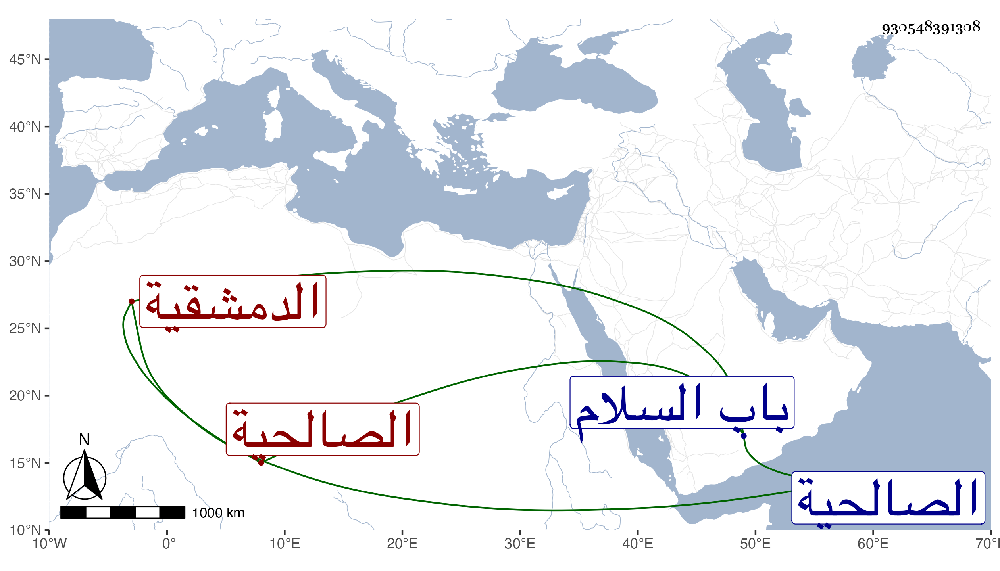

0902Sakhawi.DawLamic.ITO20230111-ara1.EIS1600.930548391308
Biography ID: 930548391308
311
سارة ابنة الشرف محمد بن علي بن محمد بن إبراهيم بن الشرف يعقوب ابن الامير أبي إسحاق إبراهيم بن موسى بن يعقوب بن يوسف الدمشقية الصالحية قريبة إبراهيم بن محمد بن إبراهيم الماضي وتعرف كسلفها بابن المعتمد ، سمعت من ناصر الدين محمد بن محمد بن داود ابن حمزة وحدثت اجازت لنا شفاها وكانت من سروات نساء زمانها عقلا ودينا وأصالة وعراقة . ماتت بعد مرض طويل في ليلة الاحد رابع عشرى جمادى الاولى سنة اثنتين وستين وصلى عليها بجامع ابن منجك ظاهر باب السلام وحملت إلى الصالحية فصلى عليها ايضا بالجامع المظفرى ثم دفنت بتربة جدها شمالى مدرسة أبي عمرو كانت جنازتها حافلة رحمها الله وإيانا .
